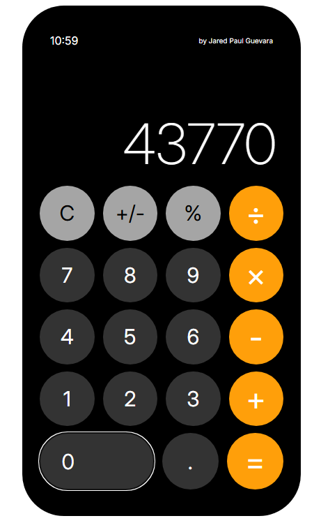
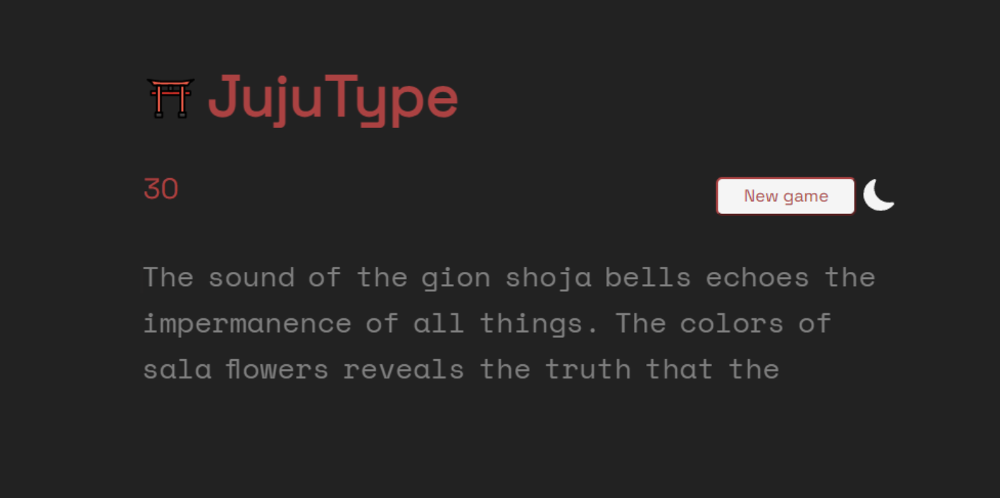

projects

Calculadora is a browser-based calculator application, capable of basic mathematical
operations. Inspired by the iOS calculator app and developed as part of The Odin Project curriculum.
Built in HTML, CSS, and JavaScript.

Etch-A-Sketch is a browser-based drawing application, allowing users to
the cursor to draw on an increasingly opaque canvas. Inspired by the classic toy
and developed as part of The Odin Project curriculum.
Built in HTML, CSS, and JavaScript.

The Spam vs. Ham classifier is a logistic regression model,
capable of discerning between spam emails and legitimate emails. The accompanying web application
takes a user-inputted email to predict its legitimacy. Built in Python and Flask.

Natural Disaster Classifier is a set of computer vision models, trained to classify and
differentiate between natural disaster images and their apparent damage level. Developed as the final project
for UC Berkeley's Data 200S: Principles and Techniques of Data Science.

JujuType is a speed typing game inspired by Monkeytype and my favorite anime, Jujutsu Kaisen.
Built in HTML, CSS, and JavaScript.
Simple Substructure Search is a Python module that processes molecular
structural data files (.sdf), returns their graphical representations via NetworkX, and can
detect the presence of substructures via molecular fingerprinting.